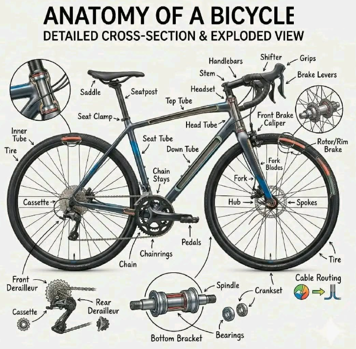

Bikes are getting more complex — electronic shifting, wireless derailleurs, a dozen cassette options that all sound the same in a shop pitch. Watch a bike go together, part by part, so you can walk in speaking the language instead of nodding along.

A full-bike cheat sheet, before the interactive breakdown below.
Frame
Ties every other part together — its size and angles set how the bike fits and handles.
Fork
Holds the front wheel and carries steering input down to it from the headset.
Headset
Two sealed bearings, top and bottom of the head tube, that let the fork rotate smoothly when you steer.
Rim & tire
The rim is sized by diameter (700c, 650b, 26", etc.); the tire mounts on it and is the only part actually touching the road.
Spokes
Tensioned wires from hub to rim that hold the wheel true — more spokes generally means a stronger, heavier wheel.
Hub & skewer
The bearing at the wheel's center, plus the quick-release (or thru-axle) that clamps the wheel into the frame or fork.
Stem
Bolts the handlebar to the fork's steerer tube — its length sets how far forward you reach.
Handlebar
What you actually hold — flat, riser, or drop-bar shape sets your riding position and hand options.
Brake & shift lever
On most road and gravel bikes, one lever does both jobs — squeeze to brake, click or push sideways to shift.
Seatpost
Slides into the seat tube and clamps the saddle at your measured height.
Saddle rails
The two rods the saddle clamps onto — sliding them back or forward fine-tunes your position over the pedals.
Saddle
The single most personal fit point on the whole bike — shape and width matter more than padding thickness.
Chainring
The front toothed ring the pedals turn — its tooth count, paired with the rear cog, sets how hard or easy each stroke feels.
Bottom bracket
The bearing inside the frame that the crank spindle spins in — a worn one shows up as play or creaking underfoot.
Crank arms & pedals
Where your legs put in power. Arm length is a fit measurement too, just like frame size.
Chain
A loop of linked plates and rollers carrying power from the chainring to whichever rear cog is currently selected.
Brake caliper
Squeezes the pads onto the rim (drawn here) or a disc rotor, depending on the bike.
Brake pads
The actual wearing part — rubber for a rim, replaceable pucks for a disc. Check these before you check anything else.
Brake cable housing
Runs from each brake lever to its caliper — front and rear are routed separately, drawn here along the top tube and fork.
Rear cog
One gear, always engaged — no derailleur, cable, or adjustment needed.
Lockring
Threads onto the hub to hold the single cog in place — the same idea a full cassette uses, just for one gear instead of many.
Chain tensioner
With no derailleur to take up slack, something has to keep the chain taut — a small spring-loaded wheel, or horizontal dropouts you slide by hand.
Derailleur hanger
A small, deliberately weak bracket bolting the derailleur to the frame — it's meant to bend or snap in a crash instead of the frame itself, and shops keep spares for exactly this reason.
Cassette
A stack of different-sized cogs. Shifting moves the chain sideways between them to change gear.
Cassette lockring
Threads onto the freehub body to clamp the whole stack of cogs in place.
Derailleur body
The cable-pulled arm bolted to the frame that swings the chain sideways onto a bigger or smaller cog.
Jockey wheels & cage
Two small pulleys that guide the chain and take up slack — the metal plate holding them is the "cage" shops refer to.
Gear cable housing
Carries the pull from your shift lever to the derailleur — the part that stretches over time and needs the odd adjustment.
Derailleur hanger
A small, deliberately weak bracket bolting the derailleur to the frame — it bends or snaps in a crash instead of the frame itself.
Cassette — narrow range (11–28T)
Gears sit close together for smooth, evenly-spaced pedaling on flatter roads — but no easy bail-out gear for steep climbs.
Cassette — wide range (10–50T)
Trades smooth spacing for a much easier bail-out gear — the difference between grinding and walking on a loaded climb.
Cassette lockring
Threads onto the freehub body to clamp the whole stack of cogs in place, whichever range it spans.
Rear derailleur — short cage
A narrow cassette needs less chain wrap, so the derailleur's cage stays short.
Rear derailleur — long cage
A wide-range cassette needs far more chain wrap to take up slack, so the cage stretches noticeably longer to reach the biggest cog.
Jockey wheels
The two pulleys inside the cage — notice how much farther apart they sit once the cage lengthens for the wide cassette.
Gear cable housing
Carries the pull from your shift lever to the derailleur, whichever range the cassette is built for.
Derailleur hanger
A small, deliberately weak bracket bolting the derailleur to the frame — it bends or snaps in a crash instead of the frame itself.
Cassette
Same job as on a mechanical bike — a stack of cogs the chain moves between — usually with more speeds (11–13) on electronic groupsets.
Cassette lockring
Threads onto the freehub body to clamp the whole stack of cogs in place.
Electronic derailleur
A small motor built into the derailleur body moves the chain instead of a cable pulling it — shifts stay precise and never need cable-tension adjustment.
Jockey wheels & cage
Same job as on a mechanical derailleur — guiding the chain and taking up slack — just driven by the motor above them.
Battery pack
Powers the derailleur's motor (and front derailleur, if fitted) — typically good for hundreds of kilometres per charge.
Wireless shift signal
A button tap sends a signal — wireless on some brands, a thin wire on others — to the derailleur's motor instead of pulling a cable.
A shop can always describe a bike in terms that sound impressive. Knowing what each part actually does is how you tell an upgrade worth paying for from one that isn't.
"Cassette," "derailleur cage," "electronic shifting" stop being sales jargon and start being parts you can point at.
Wider cassette, longer derailleur cage, heavier bike — every upgrade trades something for something else. Now you can see what.
Walk into any shop, or open any quiz on this site, already knowing what you're choosing between.